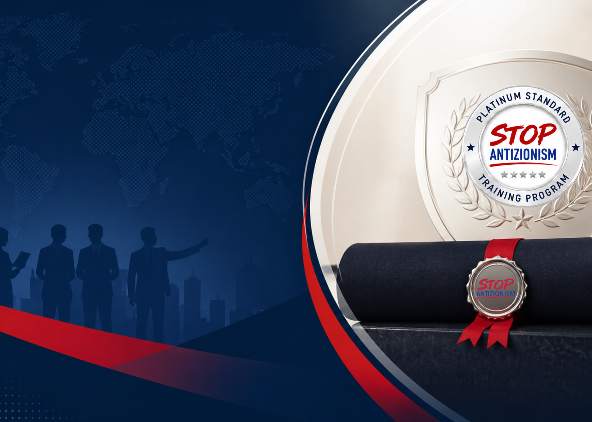
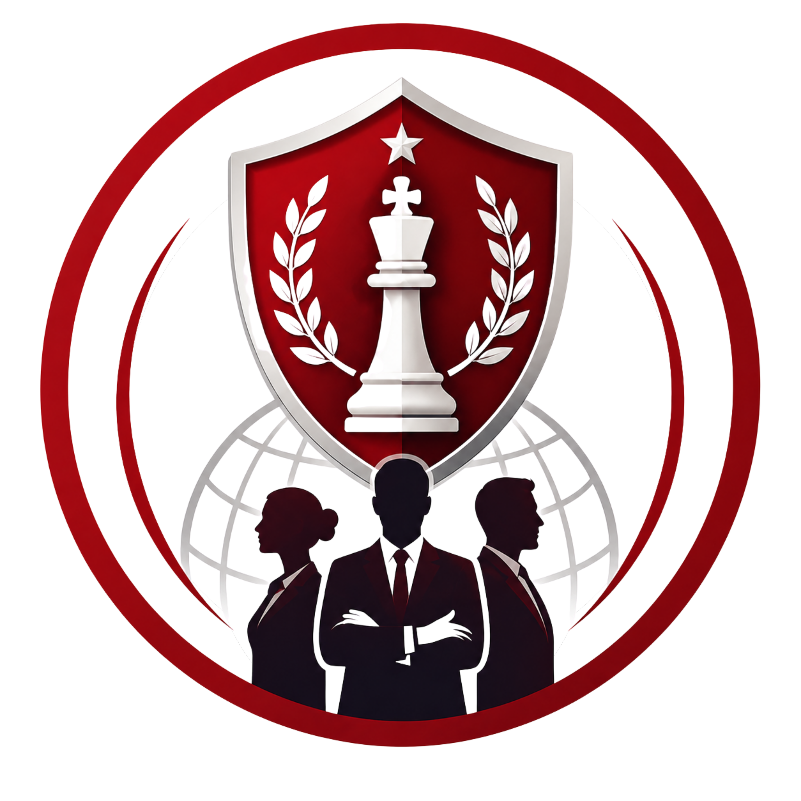

Certificate Educational Program
Certificate
Educational Program
If You Can’t Name It, You Can’t Fight It. Now You Can.
ABOUT StopAntizionism Certificate Educational Program
Three Tracks. One Mission.
The Stop Antizionism Certification Program offers structured, expert-led training designed to help individuals understand, analyze, and effectively respond to antizionism in today’s social, academic, and policy environments.
Whether you are new to the topic or already engaged in advocacy, our two-track system provides a clear pathway from foundational knowledge to advanced leadership and strategic influence.
- The Foundational Certificate focuses on building awareness, understanding, and communication skills.
- The Master Certification Program delivers advanced training in advocacy, leadership, policy engagement, and countering antizionist narratives.
These programs are designed to equip participants with the tools to navigate public discourse, challenge misinformation, and contribute to informed and impactful conversations.
KNOWLEDGE —» ACTION —» IMPACT

StopAZ Certified: Antizionism Literacy
Foundational Education on Antizionism
The Stop Antizionism Foundational Certificate is an introductory training program focused on building a clear understanding of antizionism, its origins, and its impact on society, campuses, and public discourse.
Participants learn to:
- Recognize antizionist narratives and misinformation
- Understand the connection between antizionism and antisemitism
- Engage in informed discussions with confidence
- Respond effectively in social, academic, and professional environments
This program is ideal for individuals seeking antizionism education, awareness training, and practical communication skills.
StopAZ Certified: Leadership Program
Master Certification in Antizionism Strategy & Leadership
The Stop Antizionism Master Certification Program is an advanced training designed for individuals seeking to lead, influence, and drive strategic responses to antizionism across institutions, policy, and media.
Participants develop expertise in:
- Analyzing antizionist frameworks and influence systems
- Strategic communications and narrative development
- Advocacy, lobbying, and policy engagement
- Leading initiatives
This program is ideal for those involved in advocacy, policy, media, and leadership roles, and who are committed to countering antizionism through informed, strategic, and impactful action.
StopAZ Certified: Educator Program
Master Certification in Antizionism Education & Training
The Stop Antizionism Master Certification Program is an advanced training designed for individuals seeking to educate and train on dangers of antizionism and how to confront it.
Participants develop expertise in:
- Analyzing antizionist frameworks and influence systems
- Strategic communications and narrative development
- Advocacy, lobbying, and policy engagement
- Leading initiatives
- Education and training others
This program is ideal for those involved in advocacy, education, policy, media, and leadership roles, and who are committed to countering antizionism through informed, strategic, and impactful action.
About StopAZ
Stop Antizionism (StopAZ) is a global educational initiative advancing research, education, and public awareness about modern antizionism and contemporary Jew-hatred. Through innovative educational programs, research, and community engagement, StopAZ empowers individuals to recognize harmful narratives, challenge misinformation, and promote informed dialogue.
Every purchase helps support StopAZ's mission to advance research, education, and public awareness about modern antizionism and contemporary Jew-hatred. Together, we change culture.